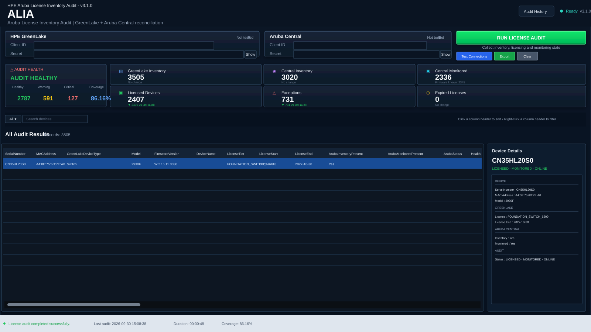
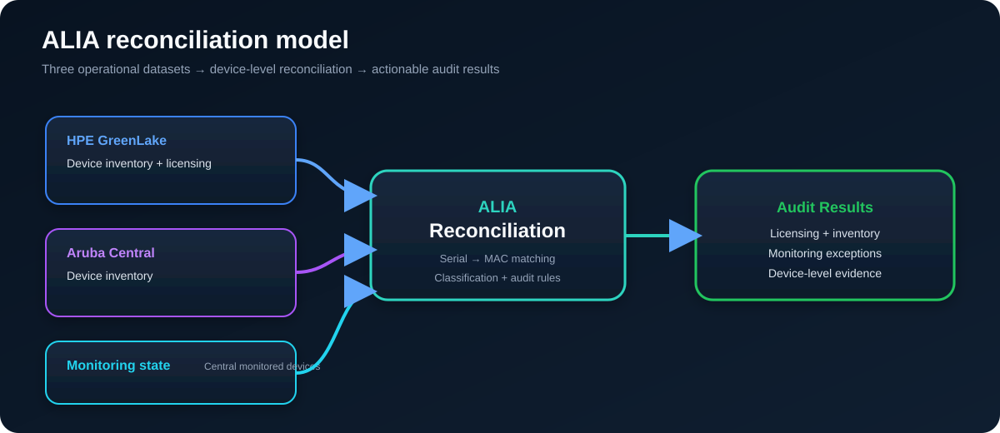
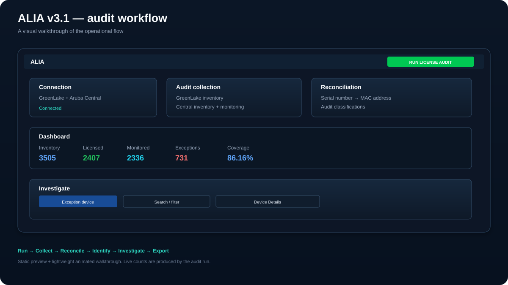

ALIA compares HPE GreenLake device inventory and licensing with Aruba Central inventory and monitoring state, then turns the differences into a device-level audit you can investigate.
Open-source • Windows PowerShell 5.1 • Aruba Central + HPE GreenLake
View on GitHub Read the technical guide
ALIA (Aruba License Inventory Audit) is an enterprise-oriented PowerShell application for network and infrastructure teams that need one operational view of licensing, inventory, monitoring state and reconciliation exceptions across HPE GreenLake and Aruba Central.
Identify licensed, unlicensed and expired devices using GreenLake licensing information.
Compare GreenLake inventory with Aruba Central device inventory.
Identify licensed devices that are missing from Central monitored-device data.
Inspect combined GreenLake, Central, monitoring and audit state for a selected device.
Search, sort and apply column filters without rebuilding the underlying audit dataset.
Keep a local history of previous audit metrics so teams can compare operational runs.


The application collects inventory and monitoring state, reconciles devices primarily by serial number and secondarily by MAC address, classifies the result, and presents dashboard and device-level evidence.
Review Aruba device licensing across HPE GreenLake.
Compare Aruba Central inventory against the GreenLake device population.
Find devices with licensing or monitoring mismatches before cleanup or renewal work.
Identify devices that exist in one system but are absent or inconsistent in another.
Export the current audit view and retain previous audit metrics locally.
Run the canonical PowerShell application directly or build a Windows EXE with the included builder.
Examples include licensed devices missing from Central, devices not present in monitored data, expired licenses, unlicensed devices, and other reconciliation mismatches surfaced by the audit engine.
ALIA audits and reconciles HPE GreenLake inventory and licensing against Aruba Central inventory and monitoring state.
Devices are matched primarily by serial number and secondarily by MAC address.
The current application is an audit and reconciliation tool. Its workflow collects data and presents discrepancies; it does not modify inventory or licensing records.
The canonical application targets Windows PowerShell 5.1 and Windows Forms. The repository also includes a v3.1 EXE build script.
Audit history is stored locally for the current Windows user under %LOCALAPPDATA%\ALIA\audit-history.json.
Yes. The repository is public and distributed under the GNU GPL v3 license.
Read the complete documentation, source code, build instructions and release notes on GitHub.